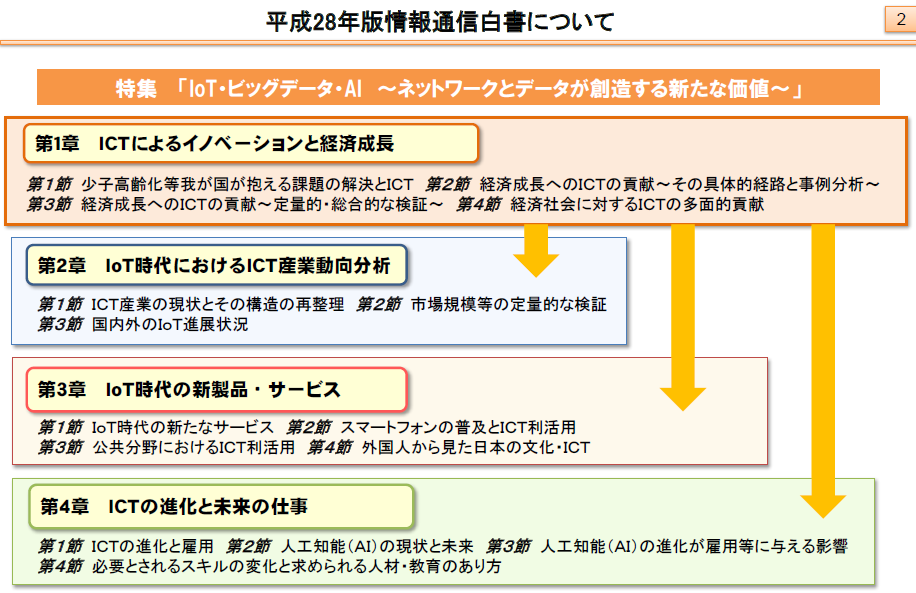
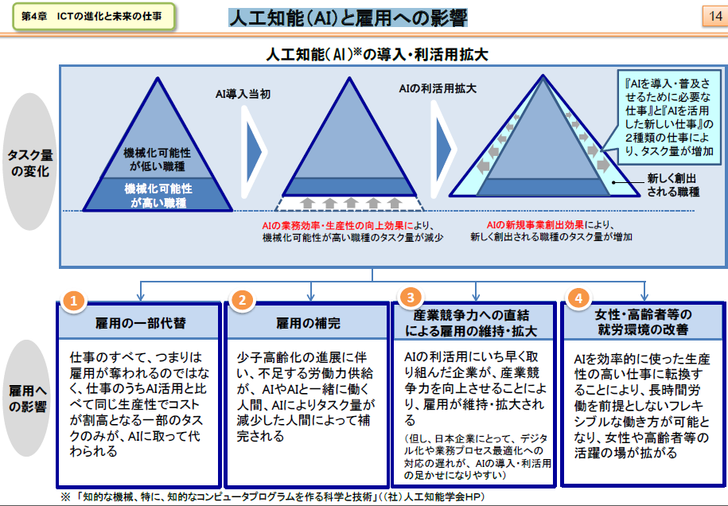

-
- 特集「IoT・ビッグデータ・AI ～ネットワークとデータが創造する新たな価値」
- 

- ICT投資の現状
- ○我が国の大きな課題の一つである少子高齢化による労働力不足に対処するためには、積極的なICT投資を行い生産性向上等を図っていくことが重要。
- ○これまでの日本企業の主なICT投資は、業務効率化及びコスト削減の実現を目的とした「守りのICT投資」。一方米国企業は、「ICTによる製品／サービス開発強化」、「ICTを活用したビジネスモデル変革」などを目的とした「攻めのICT投資」により、ＩＣＴ製品、サービスで先行。
- ○今後の日本企業のＩＣＴ投資は、ハードからソフトやサービスへとシフトする見通しであり、クラウドなど生産性向上に寄与するICTの導入が進む可能性がある。
- ICTがもたらす非貨幣的価値
- ○ICTの価値は企業側と消費者側それぞれにもたらされるが、企業側は最終的にGDPの増加等として既存統計でとらえられるのに対し、消費者側は既存統計でとらえられていない部分（非貨幣的価値）がある。
- ○消費者側にもたらされるICTの非貨幣的価値として、①消費者余剰、②時間の節約、③情報資産（レビュー等）に着目して分析し、以下の結果を得た。
- ①消費者余剰（消費者が支払っても良いと考える価格と、実際に支払われている価格との差）について、音楽・動画視聴サービスを事例に分析すると、
- 利用者は1ヶ月あたり150円～200円程度の余剰を得ている。
- ②時間の節約について、ネットショッピングを事例に分析すると、1回あたり40分～1時間程度の節約になった。
- ③情報資産（レビュー）について、ネットショッピングを事例に分析すると、8割以上の利用者がレビューによって購入する商品を決定した経験がある。
- IoT/ビッグデータ時代に向けた新たな情報通信政策
- IoT/ビッグデータ/AI等の発展による世界的な産業構造の変革にあたって、IoT時代に対応した新たな生産プロセスの開発やサプライチェーン全体の最適化を目指し、官民を挙げた取組が各国で本格化する中、我が国においても、産学官の連携によるIoT推進体制として、平成27年10月に「IoT推進コンソーシアム」が設立された。
- 人工知能（AI）と雇用への影響
- 
- タスクの変化
- AIの業務効率・生産性の向上効果により、機械化可能性が高い職種のタスク量が減少
- AIの新規事業創出効果により、新しく創出される職種のタスク量が増加
- 新しく創出される職種
- 『AIを導入・普及させるために必要な仕事』と『AIを活用した新しい仕事』の２種類の仕事により、タスク量が増加
- 雇用の一部代替
- 仕事のすべて、つまりは雇用が奪われるのではなく、仕事のうちAI活用と比べて同じ生産性でコストが割高となる一部のタスクのみが、AIに取って代わられる
- 雇用の補完
- 少子高齢化の進展に伴い、不足する労働力供給が、 AIやAIと一緒に働く人間、AIによりタスク量が減少した人間によって補完される
- 産業競争力への直結による雇用の維持・拡大
- AIの利活用にいち早く取り組んだ企業が、産業競争力を向上させることにより、雇用が維持・拡大される
- （但し、日本企業にとって、 デジタル化や業務プロセス最適化への対応の遅れが、 AIの導入・利活用の足かせになりやすい）
- 女性・高齢者等の就労環境の改善
- AIを効率的に使った生産性の高い仕事に転換することにより、長時間労働を前提としないフレキシブルな働き方が可能となり、女性や高齢者等の活躍の場が拡がる
- 人工知能（AI）への対応
- 人工知能（AI）の普及に向けた今後の対応・準備
- 日本では、「対応・準備については、特に何も行わない」とする者が多くみられる。他方、米国では、「人工知能（AI）の知識・スキルを習得するなど、人工知能（AI）を使う側に立って、今の仕事・業務を続けようと対応・準備する」とする者が多くみられる。
- 今後、自分自身が取得したい人工知能（AI）活用スキル
- 習得したいスキルを日米で比較した場合、日本は、いずれにおいても、米国よりも各種人工知能（AI）活用スキルの習得意欲が低い。
- 列挙する
- 学習環境や支援制度に対するニーズ
- AI（人工知能）活用スキルを取得するための学習環境や支援制度について、日米双方で、「大学等高等教育機関における教育・研究の充実」が必要とする者が多くみられる。加えて、米国では、「企業における自己啓発に関する支援制度」を必要とする者も多い。
- 総括
- ○ ＩＣＴの積極的な利活用により、経済成長は加速する。その中核となるのは、ＡＩを活用したＩｏＴであり、データ（ビッグデータ）の収集・活用がキーとなる。
- ○これらのＩｏＴ、ビッグデータ、ＡＩなどの新たなＩＣＴは、企業の生産性向上や新たな需要の創出などを通じて、経済成長への大きな貢献が期待できる。
- ○しかし、企業アンケートや消費者アンケートによると、米英等と比較して、日本の企業は新たなＩＣＴ投資の意向が相対的に十分でなく、また、日本の消費者はＩＣＴを活用した新たな商品・サービスの認知度等が相対的に低いことが浮き彫りになった。
- ○さらに、日本の就労者は、今後職場に浸透するであろうＡＩに対して、米国よりも、対応・準備の遅れが目立つ結果となった。
- ○来るＩｏＴ時代に向け、経済成長の中核となるＩｏＴ活用に我が国が乗り遅れることのないよう、企業や就労者がそれぞれ人材育成等の課題にしっかり対応することが重要である。
- 特集部詳細
- 【第1章第１節】 少子高齢化等我が国が抱える課題の解決とＩＣＴ
- 少子高齢化やそれに伴う人口減少は、我が国経済の供給面と需要面の双方にマイナスの影響を与え、我が国の中長期的な経済成長を阻害する可能性がある。
- 様々なデータを収集し（ＩｏＴ）、蓄積し（ビッグデータ）、人工知能（ＡＩ）にて処理・分析することで、現状把握、予測、機器・サービスの制御を行い、新たな価値の創造や課題解決に貢献することが期待される。
- 【第1章第２節】 ＩＣＴによる経済貢献経路
- 【第４章第１節】 ＩＣＴの進化と雇用、働き方
- 我が国就労者は、テレワークやシェアリングエコノミー型ワーク、デジタルファブリケーションなどの新しい働き方で実現が見込まれる多様な働き方に対して、米国就労者に比べて魅力を感じる人が少ない傾向がある。

- 【第４章第２節】 人工知能（AI）の現状と未来

- 人工知能のイメージ
- コンピューターに自我（感情）をもたせる技術
- コンピューターが人間のように見たり、聞いたり、話したりする技術
- 人間の脳の仕組みと同じ仕組みを実現する技術
- 人間の脳の認知・判断などの機能を、人間の脳の仕組みとは異なる仕組みで実現する技術
- ゲームやクイズなどの特定の分野において、人間と同等もしくは人間以上の能力を実現する技術
- 画像や自然言語（話し言葉や書き言葉）、様々なデータなどを分析して、その意味合いを抽出する技術
- 学習や推論、判断などにより、新たな知識を得る技術
- 人間を超える知能を実現する技術
- 人工知能（AI）の利活用が望ましい分野
- 生体情報や生活習慣、病歴、遺伝等と連動した、健康状態や病気発症の予兆の高度な診断
- 路線バスやタクシー等の高度な自動運転
- 渋滞情報や患者受入可能な診療科情報等と連動した、緊急車両の最適搬送ルートの高度な設定
- 道路や鉄道などの混雑状況等と連動した、交通手段間での高度な利用者融通や増発対応
- 監視カメラ映像や不審者目撃情報等と連動した、犯罪発生の予兆の高度な分析
- 高度かつリアルタイムの需要予測や製造管理等によるサプライチェーンの最適化
- 未知のサイバー攻撃や内部犯行等による不正アクセスや、不正送金などの金融犯罪の高度な検知
- 高度な意味理解や感情認識等によるコンピュータと人間の対話の高度化
- 利用者の嗜好やメールの履歴、発信元等と連動した、迷惑メールの高度かつ自動的な削除
- 市場の値動き等と連動した、金融資産の高度かつ自動的な運用による利回りの最大化
- 信用供与先の財務状況等と連動した、最適な融資額の算定による貸倒れ損失の回避
- 優良顧客の優遇や感動体験の付与、需給に見合う価格設定等による、顧客の囲い込みや満足度向上
- その他
- 【第４章第３節】人工知能（AI）の進化が雇用等に与える影響①

- 日米就労者の職場への人工知能（AI）の導入は、現時点ではあまり進んでいない。
- 自分の職場への人工知能（AI）の導入や、仕事のパートナーとしての人工知能（AI）に対する抵抗感は、米国就労者に比べて我が国就労者の方が全体的に小さい傾向がある。
- 人工知能（AI）が果たす役割・機能
- 不足している労働力を補完する
- 既存の労働力を省力化する
- 既存の業務効率・生産性を高める
- 既存の業務の提供する価値（品質や顧客満足度など）を高める
- これまでに存在しなかった新しい価値をもった業務を創出する
- 既存の業務に取組む意欲や満足度を高める
- 新しい業務に取組む意欲や満足度を高める
- その他
- 【第４章第３節】 人工知能（AI）の進化が雇用等に与える影響②
- 人工知能（AI）の導入により、「AIを導入・普及させるために必要な仕事」と「AIを活用した新しい仕事」の2種類の仕事によりタスク量の増加が見込まれる。
- 我が国有識者は、人工知能（AI）導入・普及により、労働力供給の減少を補完できると考えている人が多い。
- 【第４章第４節】 必要とされるスキルの変化と求められる教育・人材育成のあり方

- 人工知能（AI）普及に向けた今後と対応・準備について、我が国就労者は特に何も行わないが過半数を超える。
- 人工知能（AI）普及において政府に期待される役割として、日米ともに就労者については「政策は中立であるべき」という回答が多数派を占めるが、国内の有識者については「実用化および導入を促進する政策をとるべき」との回答が多数派を占める。